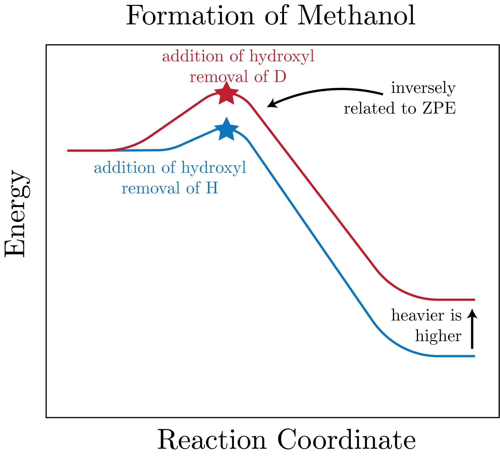
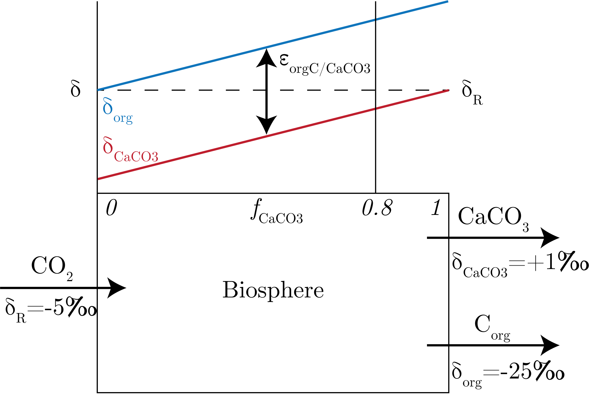
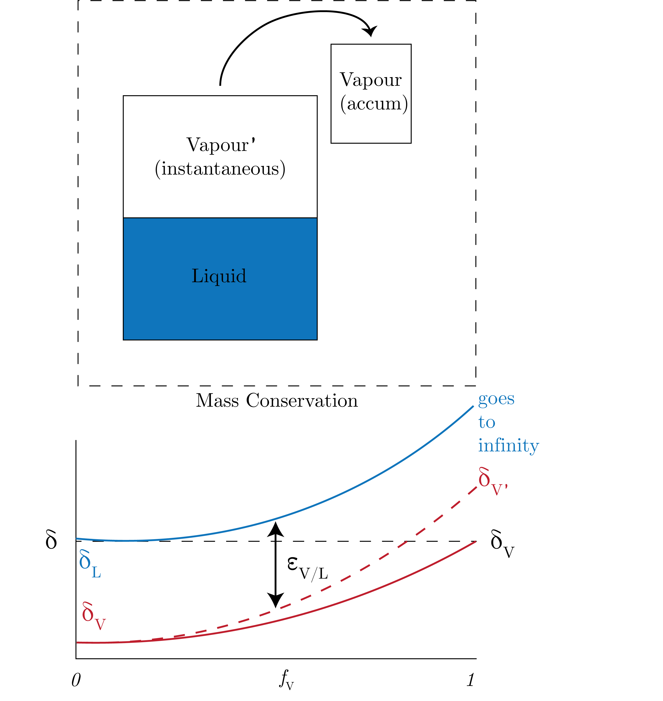

Isotopes are a difference in the number of neutrons in the nucleus, and this changes the relative abundances of each isotope.
These behave singularly for every kind of element, that is C isotopes behave mostly similarly (i.e., C isotope doesn't function like N).
Notation
We define the ratio as:
\begin{equation}
R^{\text{heavy}} = \frac{^{\text{heavy}}C}{^{\text{reference}}C},
\end{equation}
and the fractional abundance:
\begin{equation}
f^{\text{heavy}} = \frac{^{\text{heavy}}C}{^{\text{heavy}}C + \:^{\text{light}}C}.
\end{equation}
Next, we can define our $\delta$-notation:
\begin{equation}
\delta^{\text{heavy}}C = \left( \frac{R^{\text{heavy}}_{meas} - R^{\text{heavy}}_{std}}{R^{\text{heavy}}_{std}} \right) \times 10^3.
\end{equation}
We also might care about mixing equation:
\begin{equation}
n_T\delta_T = n_A\delta_A + n_B\delta_B + \cdots,
\end{equation}
but this is not necessarily the case for large $\delta$'s, where we have that $n_T = n_A + n_B$ for $n$ the number of each isotope.
The better way of doing this is with fractional abundances:
\begin{equation}
n_Tf_T = n_Af_A + n_Bf_B + \cdots.
\end{equation}
We can also define the fractionation factor as:
\begin{equation}
\alpha_{A / B} = \frac{R_B}{R_A},
\end{equation}
for a process $A \to B$, where we note that $\alpha$ is products over reactants.
We can also define the enrichment factors:
\begin{equation}
\epsilon_{ A / B} = \left( \alpha_{A /B} -1 \right) \times 10^3 \simeq \delta_A - \delta_B.
\end{equation}
Vibrational Modes
We can think about a molecule that has a vibrational model with a spring constant $k$ and the frequency of vibration $\nu$ can be defined:
\begin{equation}
\nu = \frac{1}{2\pi}\sqrt{\frac{k}{\mu}},
\end{equation}
for $\mu$ our reduced mass.
Therefore, our Zero Point Energy is going to change for different isotopes, with the heavier isotope having lower ZPE and thus will take more energy to dissociate.
This is the basis of isotope fractionation, which happens as work is applied to system.
We see that this ZPE is going to dictate which isotope dissociates first given this applied work on the system, and therefore the chemistry that stems from this work will be dependent ultimately on this mass differences and the associated ZPE differences.
Fractionation Effect
We have two kinds of fractionation:
Equilibrium
Kinetic
Equilibrium
We imagine a beaker with liquid and vapour phases, with isotopic composition $\delta_L$ and $\delta_V$, respectively.
If we take the species to be water, the vapour phase will preferentially prefer the lighter isotopes as it is a gas are more energetic ($^{16}$O over $^{18}$O or $^1$H over $^2$H).
Therefore, we can get that $\delta_V < \delta_L$ which then means that we can define $\epsilon_{V / L} = \delta_V - \delta_L <0 \sim f(T)$.
Another example would be in marine carbonates, specifically the formation of heavy carbonate ion:
\begin{equation}
\text{H}_2^{18}\text{O} + \text{CO}_3^{2-} \leftrightharpoons \text{H}_2\text{O} + \text{CO}_2^{18}\text{O}^-.
\end{equation}
and the formation of calcium carbonate:
\begin{equation}
\text{Ca}^{2-} + \text{CO}_3^{2-} \to \text{CaCO}_3 (s),
\end{equation}
which gives, overall:
\begin{equation}
\text{CaCO}_3 + \text{H}_2^{18}\text{O} \leftrightharpoons \text{CaCO}_2^{18}\text{O} + \text{H}_2\text{O}.
\end{equation}
We can define an equilibrium constant as:
\begin{equation}
K_{eq} \propto \frac{^{18 / 16}\text{O}_{solid}}{^{18 / 16}\text{O}_{water}} \sim f(T).
\end{equation}
Therefore, we have a thermometer, which experimentally we know this relation is linear.
So if we measure the ratio in water and we know the equilibrium constant, and we measure the solid in the water, we can tease our the temperature.
Kinetic
We are talking about the pathway of getting from one product to another.
Let's consider the formation of Methanol from Methane, in Fig. 1.

Fig. 1: The formation of Methanol from Methane in reaction coordinate-energy space.
Import to note here is that the lower the ZPE, the higher the energy required to pull off the hydrogen (or deuterium) and add on the hydroxyl group.
The fractionation factor is defined as:
\begin{equation}
\alpha_{\text{CH}_4 / \text{CH}_3\text{OH}} = \frac{R_{\text{MeOH}}}{R_{\text{CH}_4}}.
\end{equation}
The key is to:
Find where the reaction is irreversible
Identify dependent reactions on the pathway, such as:
Enzymes
Intermediates
Temperature
One great example of this is photosynthesis:
\begin{equation}
\text{CO}_2 + \text{H}_2\text{O} \to \text{CH}_2\text{O} + \text{O}_2.
\end{equation}
One important thing to note here that C$_3$ photosynthesis, from plants and algae, has a fractionation factor of around 10 to 20, whereas C$_4$ plants, such as dry/land grasses, have an order of magnitude less.
Therefore, we can see this in the $\delta^{13}$C record, especially in recent years when C$_4$ plants expand.
We can also see the effect on oxygen, as these isotopes tell us about the hydrological cycle and how much water is stored in ice versus in water.
Modelling with Isotopes
Global Carbonate System
We can think of the world as a single box of carbon, which we present in Fig. 2.

Fig. 2: Modelling the global carbonate system with carbonate isotopes.
At steady-state, we can define the inputs equal to the outputs, giving:
\begin{equation}
f_R\delta_R = f_{\text{CaCO}_3}\delta_{\text{CaCO}_3} + f_{\text{orgC}}\delta_{\text{orgC}}.
\end{equation}
We can see that as the fraction of calcium carbonate increases, we have the corresponding isotope fractionation $\epsilon$, which is the difference between the two, increase.
For most of earth's history, we have that $f_{\text{CaCO}_3} = 0.8,$ so that most of the fractionation that was occuring was given by the calcium carbonate.
Expanding to multiple species
We can expand out model above to include the reaction itself, i.e. assuming some reaction of the form:
\begin{equation}
R \leftrightharpoons P,
\end{equation}
which has an isotope fractionation of $\epsilon_{R / P}$.
We can consider the above plot of $\delta$ as having that $\delta_\text{org} \sim \delta_P$ and $\delta_{\text{CaCO}_3} \sim \delta_R$.
Therefore, speciation matters in isotope fractionation.
An interesting exception is that aqueous $\text{CO}_2$ has heavier isotope signatures than gaseous, which is counter-intuitive.
We can then use this speciation to get at the age of water and the influence of anthropogenic emissions by relating CFCs and $\delta^{13}$C, which is lighter in isotopic composition in DIC.
Combined with CFC measurements, increasing CFC shows increasing $\delta^{13}$C in DIC, the slope of which gives the rate of accumulation.
This is similar to the global conveyor belt accumulation we saw earlier, in that the older waters accumulate more of the carbon as time goes on.
Rayleigh Distillation
We can imagine the scenario presented in Fig. 3.

Fig. 3: Rayleigh distillation scenario.
We can write this out as:
\begin{equation}
R_L = R_L^0f_v^{\alpha - 1} \quad \text{ and } \quad R_{V'} = R_L\alpha \quad \text{ and } \quad R_V = R_L^0 \frac{\left( 1 - f_V \right) ^\alpha}{1 - f_V}.
\end{equation}
In $\delta$ space, we can write these as (noting that there is error in these as they are approximations:
\begin{equation}
\delta_{L} = e_{L / V} \log\left[1 - f_V \right] + \delta_{L^0} \quad \text{ and } \quad \delta_{V'}= \delta_L + \epsilon_{L / V} \quad \text{ and } \quad \delta_{V} = \delta_{L^0} - \epsilon_{L / V}\frac{1 - f}{f}\log\left[1 - f\right].
\end{equation}
We can think of this as oxygen in the hydrological system, i.e. evaporation and precipitation.
After the vapour formation, we have that it is transported to the poles where it is rained out into the ice.